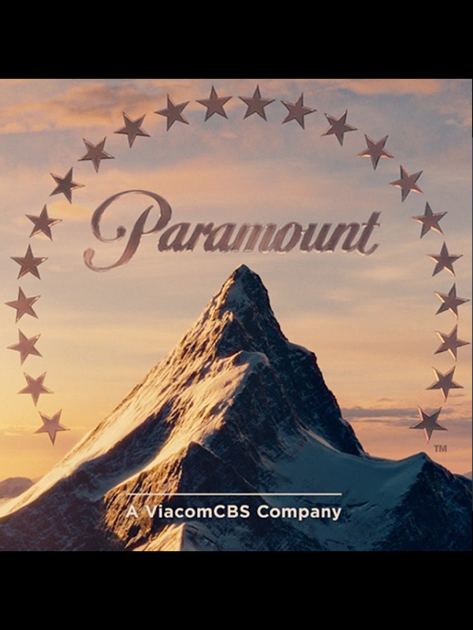

Released in 1997, "Titanic" is a sweeping romantic drama and disaster film directed, written, co-produced, and co-edited by the visionary filmmaker James Cameron. The movie stars Leonardo DiCaprio as Jack Dawson, a spirited artist, and Kate Winslet as Rose DeWitt Bukater, a young aristocrat, as the central protagonists.
Directed by -
James Cameron
James cameron is James Cameron, a visionary filmmaker and explorer, is renowned for his groundbreaking work in the world of cinema. Born on August 16, 1954, in Canada, Cameron's passion for storytelling and technology has left an indelible mark on the film industry.
Produced by -
Jon Landau
Jon Landau is a prominent film producer known for his exceptional work in the entertainment industry. Born on July 23, 1960, in New York City, Landau has made significant contributions to some of the most acclaimed and visually stunning films in Hollywood history.Throughout his illustrious career, Jon Landau's dedication to pushing the boundaries of technology and cinematic excellence has earned him numerous awards and accolades. His visionary approach to filmmaking continues to leave a lasting impact on audiences worldwide, making him a revered figure in the realm of entertainment. As a highly regarded film producer and industry veteran, Jon Landau's creative endeavors and commitment to storytelling continue to inspire and shape the landscape of modern cinema.
Distributed by -
Paramount Pictures
 Paramount Pictures Corporation is an American film and television production and distribution company and the namesake division of Paramount Global (formerly ViacomCBS). It is the fifth-oldest film studio in the world,[1] the second-oldest film studio in the United States (behind Universal Pictures), and the sole member of the "Big Five" film studios located within the city limits of Los Angeles.In 1916, film producer Adolph Zukor put 24 actors and actresses under contract and honored each with a star on the logo.[3] In 1967, the number of stars was reduced to 22 and their hidden meaning was dropped. In 2014, Paramount Pictures became the first major Hollywood studio to distribute all of its films in digital form only.[4] The company's headquarters and studios are located at 5555 Melrose Avenue, Hollywood, California.
Budget Total - Approximately $200 million USD
Box office Total - Approximately $2.2 billion USD (worldwide gross)
Academy awards and nominations
Best Picture - Won (Producer: James Cameron, Jon Landau)
Best Director - Won (James Cameron)
Best Original Song - Won ("My Heart Will Go On" - Music by James Horner, Lyrics by Will Jennings, performed by Celine Dion)
Best Original Dramatic Score - Won (James Horner)
Best Art Direction-Set Decoration - Won (Art Direction: Peter Lamont, Set Decoration: Michael Ford)
Best Cinematography - Won (Russell Carpenter)
Best Director - Won (James Cameron)
Best Original Song - Won ("My Heart Will Go On" - Music by James Horner, Lyrics by Will Jennings, performed by Celine Dion)
Best Original Dramatic Score - Won (James Horner)
Best Art Direction-Set Decoration - Won (Art Direction: Peter Lamont, Set Decoration: Michael Ford)
The film follows the story of Jack Dawson, a free-spirited artist, and Rose DeWitt Bukater, a young socialite who boards the ill-fated ship with her wealthy fiancé, Cal Hockley. When Jack and Rose's paths cross, they form an unexpected and passionate connection that defies social norms and societal expectations.
As the ship embarks on its maiden voyage, the romance between Jack and Rose blossoms amid the opulence and glamour of the luxurious Titanic. However, their love faces numerous obstacles, including Cal's disapproval and the impending doom that looms ahead. When disaster strikes, the ship collides with an iceberg, leading to a harrowing struggle for survival.
James Cameron's masterful storytelling, combined with breathtaking visuals and exceptional performances from Leonardo DiCaprio and Kate Winslet, makes "Titanic" an unforgettable cinematic experience. The film beautifully captures the grandeur of the era while painting an emotional and poignant portrait of love and loss on one of history's most legendary ships.
Behind the scenes
The making of "Titanic" was an ambitious and monumental endeavor. Director James Cameron spared no expense in creating a fully immersive and historically accurate environment, constructing a vast replica of the ship. The attention to detail was meticulous, transporting both the cast and audiences back in time to the early 20th century. The film's groundbreaking scenes depicting the ship's sinking were achieved through a combination of practical effects and cutting-edge CGI, showcasing Cameron's dedication to authenticity and realism. Behind the scenes, the production faced challenges such as demanding schedules and unpredictable weather conditions. The cast and crew endured grueling filming in freezing water, while the creative team worked tirelessly to ensure the film's grandeur and emotional impact.
The result was a cinematic triumph, with "Titanic" becoming a global phenomenon and winning multiple Academy Awards. The behind-the-scenes efforts and dedication of everyone involved elevated the film to a timeless masterpiece, leaving a lasting legacy in the history of cinema. The film's success not only propelled its stars, Leonardo DiCaprio and Kate Winslet, to international stardom but also brought critical acclaim to Cameron's visionary storytelling and filmmaking prowess.
Did you know
At the time of its release, "Titanic" was the most expensive movie ever made with a production budget of approximately $200 million. The film's scale and attention to detail were unparalleled, with a full-scale replica of the ship built for the shooting.
James Cameron was known for his dedication to historical accuracy. He consulted with experts and historians, ensuring that the sets, costumes, and events were as true to the original Titanic as possible. Many details, such as the china patterns used in the dining room scenes, were accurate to the real ship.
The shooting of "Titanic" was fraught with challenges. The filmmakers had to deal with extreme weather conditions during the outdoor scenes, and the water used in the sinking sequences was so cold that the actors had to work in icy conditions.